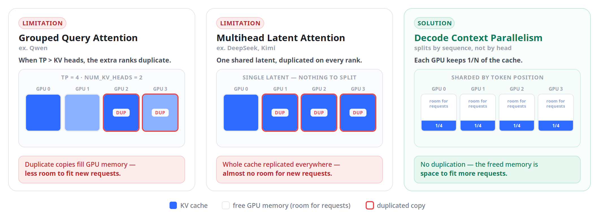
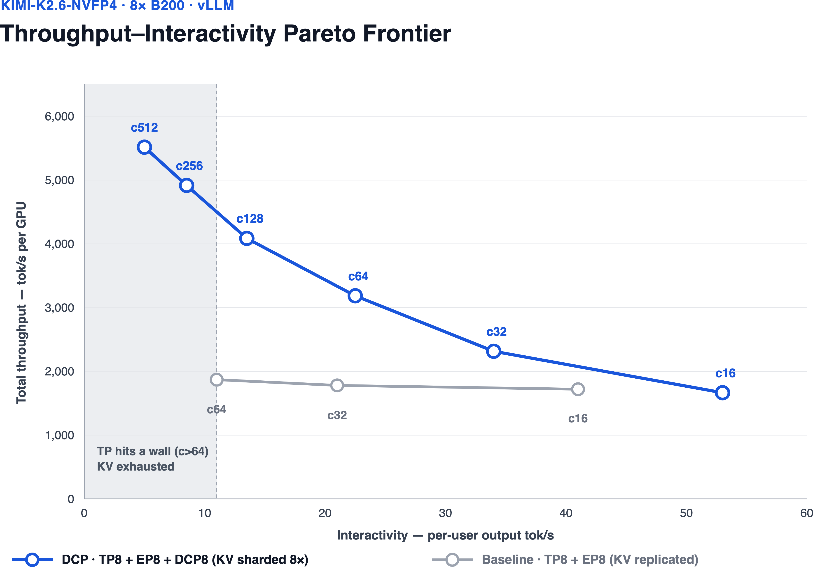
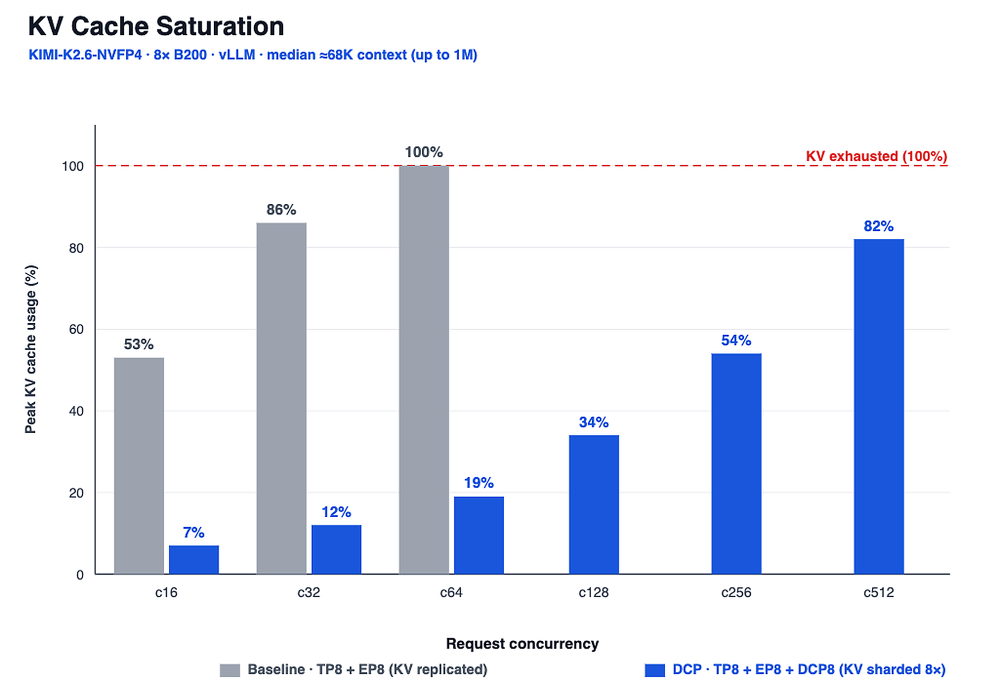
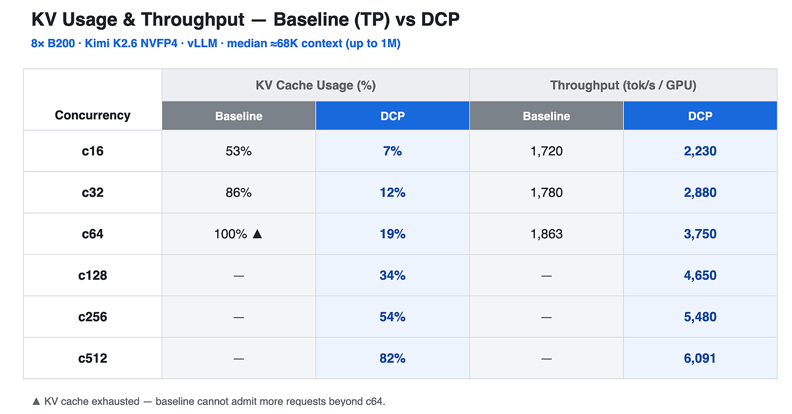
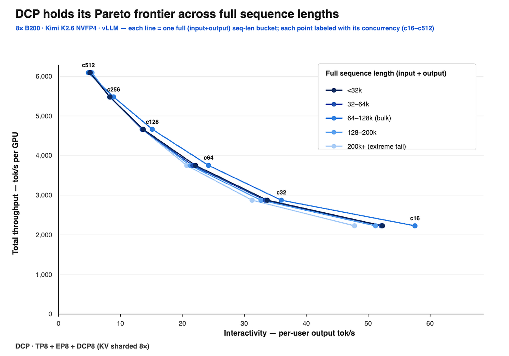
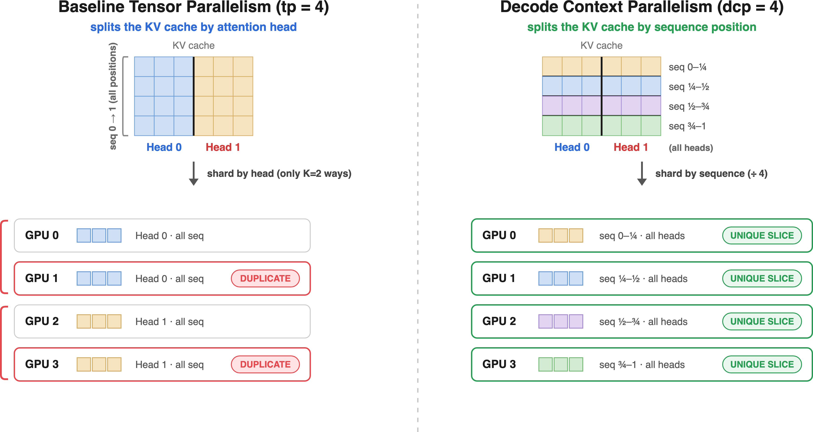

Agent类应用把长上下文推理推成了刚需：代码库、长聊天记录动不动64K到1M token，KV缓存也跟着大。vLLM博客这篇把Decode Context Parallelism拿出来讲透：纯TP按头切KV缓存有个硬地板，DCP改按序列切。
下面拆开TP为什么撞墙、8卡B200上的实测、DCP的通信流程，以及MLA和GQA两种后端的用法。
标准张量并行按注意力头切KV缓存，一个KV头是一整套K和V张量，是能分给一张卡的最小单位。有K个KV头，最多分到每卡一个头，TP再往上加就没有新头可分了，多出来的卡只能复制。
GQA模型KV头本来就少，切到每卡一个头之后TP超过KV头数，缓存开始跨卡复制。MLA更糟：它把Key和Value压成一个所有query头共享的低秩latent向量，相当于只有一个KV头，纯TP下根本没头可切，latent KV缓存在每个TP rank上完整复制一份。
两种情况复制的KV缓存都在吃显存，留给新请求的空间所剩无几，并发上不去，吞吐和token成本都跟着遭殃。

实验固定模型、硬件、工作负载，只换decode时KV缓存怎么切。数据是公开的Mooncake格式agent长上下文trace，多轮长输入配短生成：输入中位约67K token、输出约400 token，分布双峰，一半64K以上、长尾到1M。单8卡B200节点，Kimi K2.6 NVFP4，并发从16扫到512。

基线TP在并发64就把KV用到100%撞墙，吞吐停在1,863 token/s/GPU，再也加不进请求。DCP按序列切，每卡只存1/N，同样并发64只用19%，一路加到并发512才用82%，吞吐到6,091 token/s/GPU。

吞吐和交互性（每用户输出token/s）的Pareto前沿上，DCP整条线压过基线：高并发下吞吐继续涨，每用户速度还保持在可交互区间，而基线在并发64之后直接没有点了。

按完整序列长度（输入加输出）分成5档画前沿：DCP在200K以上的档位前沿依然又高又稳，短档和长档的曲线几乎重合。吞吐随并发涨，每用户速度在长上下文下还保持可用，正是复制KV的基线先耗尽显存、没法扩展的区间。

DCP不按头切，按序列（上下文）维度切。一个200K token的请求，GPU 0存0到50K的缓存，GPU 1存50K到100K，依此类推。每加一张卡，每卡的KV footprint就缩小，省下的显存换batch和并发。
decode的通信节奏很简单：AllGather Q、本地计算、AllGather加ReduceScatter。先all-gather拼出完整query（decode时query只有一个token，很便宜）；每卡在本地KV分片上算注意力，MLA是k_up上投影，GQA是tensor broadcast；最后all-gather分结果和LSE，用online-softmax的trick按LSE重加权合并，reduce-scatter求和后每卡只拿回自己的头分片。MLA还有个可选项：加载时在DCP组内复制很小的query投影，decode直接跳过query的all-gather（VLLM_DCP_Q_REPLICATE=1，见vLLM #45964）。

开DCP就加一个参数decode_context_parallel_size，配着已有的tensor-parallel用。离线：
在线服务：
MLA（DeepSeek-V2/V3/R1、Kimi K2.6）把KV压成单个latent，纯TP下整块缓存全复制，是DCP最理想的候选：整块都是冗余，整块都能按序列切。每rank只存自己的latent分片，attention时做k_up上投影重建需要的Key和Value。等效KV头数是1，序列可以切到满TP度，约束是tensor_parallel_size不小于decode_context_parallel_size且能整除。
GQA（Qwen3-235B、Llama系）有num_key_value_heads个KV头，TP先按头切，切到头数用完为止，超出的部分产生tp除以num_key_value_heads份相同拷贝。DCP把这些本来要复制的位置填上不同的序列分片，共享的KV头在query头间广播。序列切分度上限就是复制因子：比如Qwen3-235B的num_key_value_heads是4，tp=8时有2份冗余拷贝，dcp最大取2。
官方列的后续方向：TP和DCP都支持更细粒度的并行度，让并行布局更精确，收回过度切分浪费的效率；做更好的DCP all-to-all通信kernel，单节点和多节点都要；社区在把DCP扩到GLM-5.2、Kimi K3等更多模型，更长的路线图是Prefill Context Parallelism（PCP）。
这篇也点名了行业同向：NVIDIA在TensorRT-LLM里用Helix Parallelism走了类似的方向。vLLM里的DCP其实已经支持快一年了，这篇博客是借着长上下文agent用例爆发，把特性和新改进一次性讲清楚。
参考：https://vllm-project.github.io/2026/08/07/decode-context-parallelism.html